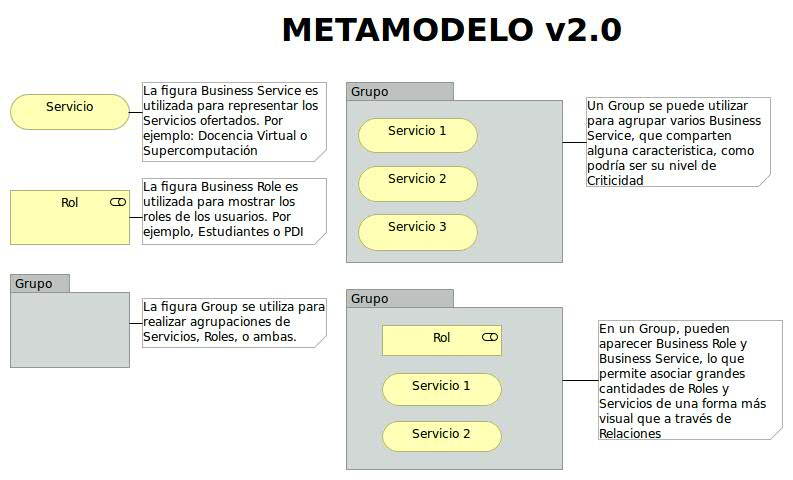
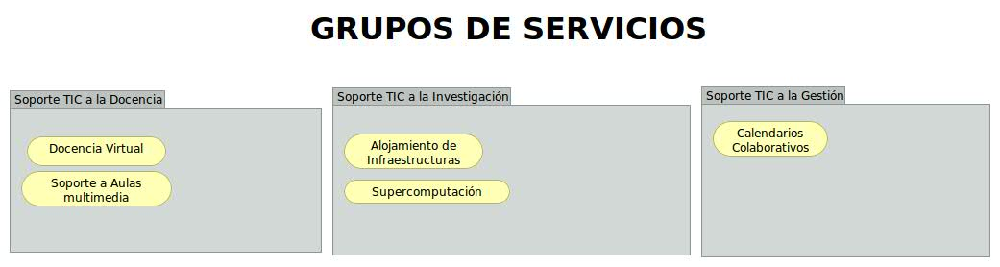
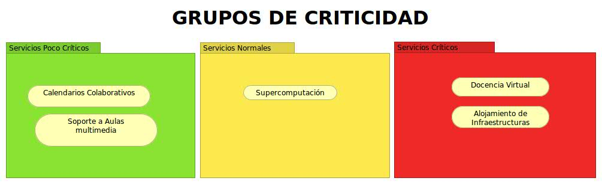
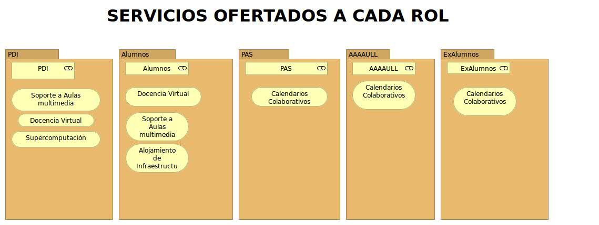
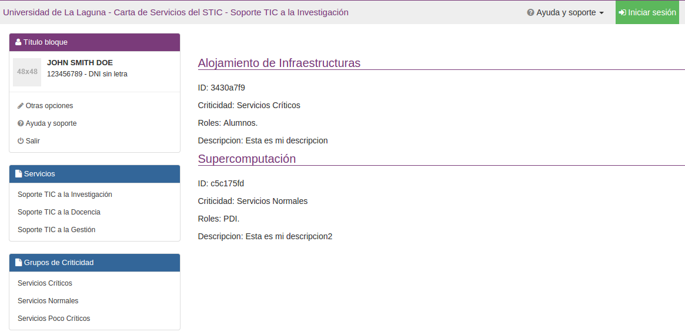

La Carta de Servicios es un proyecto promovido por el Servicio de Tecnologías de la Información y la Comunicación (STIC) de la Universidad de La Laguna (ULL) que tiene como finalidad el modelado de Carta de Servicios usando técnicas de Arquitectura Empresarial, permitiendo la automatización de tareas a través dicho modelo.
El modelado de la Carta de Servicios ha sido diseñado de manera que la utilización del proyecto sea independiente de la carta de servicios de la institución, es decir, con sólo exportar el archivo del modelo el proyecto es capaz de interpretarlo y generar toda la estructura web del mismo. Esto permite que el usuario pueda exportar este proyecto de manera fácil y cómoda.
La arquitectura Modelo-Vista-Controlador (MVC) que provee el framework Django facilita la creación de aplicaciones o módulos que agrupan un conjunto de características asociadas al mismo concepto con capacidad de configuración propia.
Este proyecto permite convertir modelos de archimate en html. La versión 2.0 soporta tres tipos de objetos: Los grupos, los servicios y los roles. A continuación se muestra el metamodelo sobre el que está construida la aplicación.

A continuación podemos ver cómo los servicios de una organización se pueden asignar al grupo de servicios al que pertenecen en la vista con nombre Carta de servicios:

Es frecuente que en una organización clasificar los servicios ofertados según el nivel de criticidad de los mismos. Para ello definimos la vista con nombre Criticidad de la siguiente manera:

Es importante restringir el acceso a ciertos servicios por la información que éstos manejan, esto se realiza en la vista con nombre Roles.

Además, cada elemento puede contener propiedades que serán también procesadas para mostrarlas en la web.
El resultado de ejecutar el proyecto carta de servicios es una página en la se listan, según alguno de los criterios específicados en las vistas, los servicios con las propiedades que tienen asociadas.
